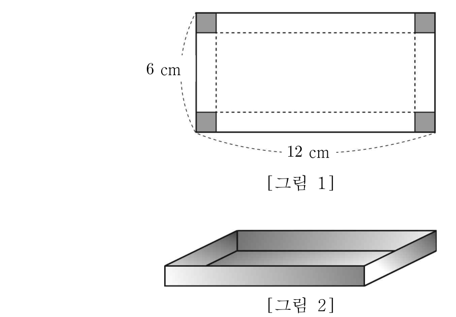

2026학년도 2학기 | 미적분 I
미적분 I 수업 학습지
00. 생각 열기 (Warm-up & Connection)
한 변이 \(12\,\text{cm}\)인 정사각형 종이의 네 귀퉁이를 잘라내 뚜껑 없는 직육면체 상자를 만든다. 잘라낼 정사각형의 한 변이 \(0\)에 가까우면 바닥은 넓지만 높이가 거의 \(0\). 너무 크면 바닥이 거의 \(0\). 따라서 부피가 가장 큰 순간이 그 사이 어딘가에 있다. 이 "가장 큰 순간"을 찾는 도구가 차시 17의 주제 — 최댓값·최솟값.
[개방형 발문] "극값과 최댓값·최솟값은 같은 말인가?" 닫힌구간 \([-1, 2]\)에서 \(f(x) = 2x^3 - 3x^2 + 2\)의 극댓값은 \(f(0) = 2\)이지만 그 구간의 최댓값은 \(f(2) = 6\)이다. 왜 극값이 최댓값보다 작을 수 있는가? (비상 미적분 I P.88 · 개념 탐구 참고)
[연결] 차시 15에서 익힌 극값은 "지역적" 봉우리/골짜기. 차시 17에서 다루는 최댓값·최솟값은 "전역적" 최고/최저. 닫힌구간 \([a, b]\)에서는 극값과 구간 끝 점의 값 \(f(a),\ f(b)\)를 모두 비교해야 한다. 또한 실생활(상자 부피, 도형 넓이, 비용)에서 변수의 정의역을 정확히 설정하는 것이 핵심 — 이 부분에서 학생들이 가장 많이 실수한다. (비상 미적분 I P.88~89 · 최댓값·최솟값과 실생활 활용 참고)
01. 개념 구성 (Conceptual Foundation)
1 닫힌구간에서의 최댓값·최솟값 정리 (최대·최소 정리)
함수 \(f(x)\)가 닫힌구간 \([a, b]\)에서 연속이면, 이 구간에서 \(f\)는 반드시 최댓값과 최솟값을 갖는다(차시 06의 최대·최소 정리).
최댓값 = \(\max\{\text{극댓값들},\ f(a),\ f(b)\}\), 최솟값 = \(\min\{\text{극솟값들},\ f(a),\ f(b)\}\).
핵심: 닫힌구간에서 최대/최소 후보는 (i) 구간 내부의 극값과 (ii) 구간 끝점 두 가지뿐. 이 두 종류만 모두 모아 그 중 가장 큰/작은 것을 고르면 끝. (비상 미적분 I P.88 · 최댓값·최솟값 정의 참고)
⚠ 극값 ≠ 최댓값·최솟값!
극댓값이 반드시 최댓값이 되는 것은 아니다. 예: \([-1, 2]\)에서 \(f(x) = 2x^3 - 3x^2 + 2\)의 극댓값 \(f(0) = 2\)는 구간 끝점 \(f(2) = 6\)보다 작다 \(\to\) 최댓값은 \(6\). 또한 열린구간에서는 최댓값·최솟값이 존재하지 않을 수 있다(연속성 + 닫힘 둘 다 필요).
2 예제 — 닫힌구간 \([-1, 2]\)에서 \(f(x) = 2x^3 - 3x^2 + 2\)
"내부 극값 + 구간 끝점" 4단계 루틴.
STEP 1·2: \(f'(x) = 6x^2 - 6x = 6x(x - 1)\). \(f' = 0 \Rightarrow x = 0,\ 1\). 둘 다 구간 \([-1, 2]\) 내부.
STEP 3 (증감표 + 후보값):
| \(x\) | \(-1\) | \(\cdots\) | \(0\) | \(\cdots\) | \(1\) | \(\cdots\) | \(2\) |
|---|---|---|---|---|---|---|---|
| \(f'(x)\) | \(+\) | \(0\) | \(-\) | \(0\) | \(+\) | ||
| \(f(x)\) | \(-3\) | ↗ | \(2\) | ↘ | \(1\) | ↗ | \(6\) |
STEP 4 (후보 비교): 후보값 \(\{f(-1), f(0), f(1), f(2)\} = \{-3, 2, 1, 6\}\). 최댓값 = \(f(2) = 6\), 최솟값 = \(f(-1) = -3\).
핵심: 극댓값 \(f(0) = 2\)는 구간 내부의 봉우리지만 구간 끝 \(f(2) = 6\)이 더 크다 \(\Rightarrow\) 최댓값은 구간 끝에서. 이처럼 "극값 따로 끝점 따로" 모두 보는 것이 차시 17의 핵심 절차. (비상 미적분 I P.88 · 예제 3 참고)
3 실생활 활용 — 정사각형 종이로 상자 부피 최대화
한 변 \(12\,\text{cm}\) 정사각형 종이 네 귀퉁이에서 한 변 \(x\,\text{cm}\)의 정사각형을 잘라내 뚜껑 없는 상자.

STEP 1 — 변수 + 정의역: 잘라낼 한 변 \(x\,\text{cm}\), 부피 \(V(x)\,\text{cm}^3\)라 하면 \(V(x) = x(12 - 2x)^2 = 4x^3 - 48x^2 + 144x\) (단 \(0 \lt x \lt 6\)).
STEP 2 — 도함수: \(V'(x) = 12x^2 - 96x + 144 = 12(x - 2)(x - 6)\).
STEP 3 — 임계점: \(V'(x) = 0 \Rightarrow x = 2\) (정의역 \(0 \lt x \lt 6\)에서 유일).
STEP 4 — 증감표: \(0 \lt x \lt 2\)에서 \(V' \gt 0\), \(2 \lt x \lt 6\)에서 \(V' \lt 0\) \(\Rightarrow x = 2\)에서 극대 = 최대. 최댓값 \(V(2) = 2 \cdot 8^2 = \) \(128\,\text{cm}^3\).
답: 잘라낼 정사각형의 한 변의 길이 = \(2\,\text{cm}\).
⚠ 학생 오류 1순위: 정의역 \(0 \lt x \lt 6\) 설정을 생략하면 \(x = 6\) 근방에서 식이 \(0\)에 가까운데도 "부피가 최대"라 잘못 추측. 실생활 문항은 물리적 의미가 있는 변수 범위를 명시해야 한다. (비상 미적분 I P.89 · 예제 4 참고)
4 열린구간 / 정의역 전체에서의 최대·최소 — 단조성 활용
실생활 문제에서는 정의역이 열린구간(끝점 미포함)이거나 무한구간인 경우가 많다. 이때는 다음을 점검한다.
- ① 임계점이 정확히 하나이고 그곳에서 극값이면 \(\Rightarrow\) 그 극값이 곧 최대(또는 최소)가 된다. (실생활 활용의 대부분이 이 패턴.)
- ② 임계점이 여러 개이면 \(\to\) 일반 함수 분석 + 양 끝의 극한 거동(\(\lim_{x\to a^+}\), \(\lim_{x\to b^-}\)) 비교.
- ③ 닫힌구간이 아닌 한, 최대(또는 최소)가 존재하지 않을 수도 있다. 예: \((0, 6)\)에서 \(V(x)\)의 최댓값은 존재하지만 (내부 극대), \(g(x) = x\)는 \((0, 6)\)에서 최댓값 없음(끝점 \(6\)은 포함되지 않으므로 \(g(x) \lt 6\)이지만 도달 불가).
핵심: 실생활 문항의 95%는 ① 패턴 — "임계점 한 개 + 극값 = 최값". 이 사고 패턴이 본 차시의 핵심 무기. (비상 미적분 I P.89 · 문제 04·05 + 자체 정리)
02. 수준별 훈련 (Level Training)
Level 1
닫힌구간에서 최댓값·최솟값 직접 구하기
💡 힌트 보기
(1) \(f'(x) = 3x^2 - 6x - 9 = 3(x - 3)(x + 1)\). 구간 내부 임계점 \(x = -1, 3\). 후보값 \(f(-2) = -8 - 12 + 18 + 5 = 3,\ f(-1) = -1 - 3 + 9 + 5 = 10,\ f(3) = 27 - 27 - 27 + 5 = -22,\ f(4) = 64 - 48 - 36 + 5 = -15\). 최댓값 \(10\) (\(x = -1\)), 최솟값 \(-22\) (\(x = 3\)).
(2) \(f'(x) = 4x^3 - 24x^2 + 32x = 4x(x - 2)(x - 4)\). 구간 \([-1, 2]\) 내부 임계점 \(x = 0, 2\) (\(2\)는 끝점). 후보값 \(f(-1) = 1 + 8 + 16 + 1 = 26,\ f(0) = 1,\ f(2) = 16 - 64 + 64 + 1 = 17\). 최댓값 \(26\) (\(x = -1\)), 최솟값 \(1\) (\(x = 0\)).
💡 힌트 보기
💡 힌트 보기
Level 2
도형 + 미분 결합 — 변수 설정과 정의역 추론

💡 힌트 보기

💡 힌트 보기
💡 힌트 보기
Level 3
"틀려야 는다!" 정의역 함정 + 단조함수의 최댓값
🚨 선생님의 함정 경고 (클릭하여 펼치기)
"극값 = 최댓값"으로 자동 동일시하는 학생 오답을 정조준하는 차시 17의 핵심 함정.
STEP 1 — 도함수 분석: \(f'(x) = 3x^2 + 6x + a\). 극값 존재 \(\Leftrightarrow D/4 = 9 - 3a \gt 0 \Rightarrow a \lt 3\). 단조 \(\Leftrightarrow a \geq 3\).
STEP 2 — 경우 분류 (단조): \(a \geq 3\)이면 \(f'(x) \geq 0\) 항상 \(\Rightarrow f\) 단조증가. 닫힌구간 \([-1, 2]\) 최솟값 \(f(-1) = -1 + 3 - a + 1 = 3 - a\), 최댓값 \(f(2) = 8 + 12 + 2a + 1 = 21 + 2a\). 조건 \(3 - a = 0,\ 21 + 2a = 15\) \(\Rightarrow\) 첫 식에서 \(a = 3\), 둘째 식 검증 \(21 + 6 = 27 \neq 15\) — 모순. 단조 케이스 해 없음.
STEP 3 — 경우 분류 (극값 존재): \(a \lt 3\)이면 임계점 두 개. \(f'(x) = 0\)의 두 근을 \(\alpha = \dfrac{-3 - \sqrt{9 - 3a}}{3},\ \beta = \dfrac{-3 + \sqrt{9 - 3a}}{3}\). \(\alpha + \beta = -2,\ \alpha\beta = \dfrac{a}{3}\). 후보 4개를 \(a\)로 정리 후 \(\max = 15,\ \min = 0\) 조건으로 \(a\) 결정. (구체 풀이는 본 문제의 학습 목표 — 경우 분류 + 후보값 모두 점검.) 예시: \(a = 0\)이면 임계점 \(0, -2\) (\(-2\)는 끝점), 후보 \(\{f(-1), f(0), f(2)\} = \{3, 1, 21\}\), \(\max = 21\) 조건 불일치. \(a = -9\)면 임계점 \(\dfrac{-3 \pm 6}{3} = 1, -3\), 내부 \(x = 1\). 후보 \(\{f(-1) = 12, f(1) = 1 + 3 - 9 + 1 = -4, f(2) = 8 + 12 - 18 + 1 = 3\}\), \(\max = 12 \neq 15\). 본 문제는 일반적으로 정수해가 깔끔하지 않음 — 학습 목표는 "절차".
STEP 4 — 학생들이 자주 빠지는 3가지 오답 패턴:
① "극댓값 = 최댓값"으로 자동 처리 (정답: 구간 끝점도 후보!).
② 단조함수일 때 후보를 끝점만 보지 않고 "극값이 없으니 답 없음"으로 잘못 결론.
③ 임계점이 구간 밖일 때 그 점의 함숫값을 후보에 포함시키는 실수.
핵심 통찰: 닫힌구간의 최대·최소 후보는 "(구간 내부의) 임계점에서의 값 + 구간 끝점의 값" 모두. 이 절차를 4단계 체크리스트로 외워 두면 함정에 빠지지 않는다.
03. 형성평가 (Final Check)
💡 풀이 전략
STEP 1 — 변수 설정: 제1사분면 점 \((x, -x^2 + 4)\), \(0 \lt x \lt 2\). 대칭으로 가로 \(2x\), 세로 \(-x^2 + 4\).
STEP 2 — 둘레 함수: \(L(x) = 2(2x) + 2(-x^2 + 4) = -2x^2 + 4x + 8\) (\(0 \lt x \lt 2\)).
STEP 3 — 도함수: \(L'(x) = -4x + 4 = -4(x - 1)\). \(L' = 0 \Rightarrow x = 1\). 부호 \((+,-)\) \(\Rightarrow x = 1\)에서 극대 = 최대.
STEP 4 — 최댓값: \(L(1) = -2 + 4 + 8 = 10\). 정답: 둘레의 최댓값 = \(10\). (가로 \(2\), 세로 \(3\)인 직사각형.) (차시 17의 핵심 — 변수 설정, 정의역 \(0 \lt x \lt 2\), 임계점 1개, 극값 = 최값.)
⭐ 도전 문제 1
📖 출처: 수능특강 수학Ⅱ · 도함수의 활용 2 · 유제 1 [26009-0099]
난이도 ★★★ (학습지 max+2, 7분) · 핵심: 극값 조건으로 매개변수 결정 → 닫힌구간에서 이차함수의 최댓값(축에서 먼 끝점에서 발생) — 차시 17 응용 시나리오의 정공법
📖 풀이 흐름 보기 (직접 풀어본 후 펼치기)
- STEP 1 — \(g(x)\) 전개: \(g(x) = (2x^2 + ax) + \bigl[2(x - a)^2 + a(x - a)\bigr] = 4x^2 - 2ax + a^2\) (이차함수).
- STEP 2 — 극값 조건으로 \(a\) 결정: \(g'(x) = 8x - 2a\). \(g'(1) = 8 - 2a = 0 \Rightarrow a = 4\). 따라서 \(g(x) = 4x^2 - 8x + 16 = 4(x - 1)^2 + 12\) (축 \(x = 1\), 위로 볼록 아님).
- STEP 3 — \([-2, 2]\)에서 후보 값: 이차함수의 축이 \(x = 1\)이므로 닫힌구간 양 끝 중 축에서 먼 \(x = -2\)에서 최댓값. \(g(-2) = 16 + 16 + 16 = 48\), \(g(1) = 12\) (최소), \(g(2) = 16\).
- STEP 4 — 최종: 최댓값 \(= g(-2) = 48\). 정답: \(48\)
핵심: "극값 조건 \(g'(c) = 0\)으로 매개변수를 정한 뒤 닫힌구간 양 끝값 비교"는 차시 17 함수의 그래프 응용 시나리오의 정공법. 이차함수로 환원되는 경우 — 축으로부터 먼 끝점에서 최댓값(아래로 볼록일 때) — 을 활용하면 풀이가 단축된다.
⭐ 도전 문제 2
📖 출처: 2011년 4월 학력평가 수학영역 가형 28번 [4점] (단답형)
난이도 ★★★ (학습지 max+2, 7분) · 핵심: 실생활 도형의 부피 최대화 — 변수 설정 \(\to\) 부피 함수 \(\to\) 미분 \(\to\) 정의역 내 임계점에서 최댓값 검증

답: 자연수로 답하시오. (서답형 단답)
📖 풀이 흐름 보기 (직접 풀어본 후 펼치기)
- STEP 1 — 변수 설정 + 부피 식: 잘라낸 정사각형의 한 변을 \(x\,\text{cm}\)라 하면 상자의 밑면은 \((12 - 2x) \times (6 - 2x)\), 높이는 \(x\). \[ V(x) = x(12 - 2x)(6 - 2x). \]
- STEP 2 — 정의역: \(12 - 2x \gt 0\)이고 \(6 - 2x \gt 0\)이고 \(x \gt 0\) \(\Rightarrow 0 \lt x \lt 3\).
- STEP 3 — 전개 + 미분: \(V(x) = 4x(6 - x)(3 - x) = 4x(x^2 - 9x + 18) = 4x^3 - 36x^2 + 72x\). \[ V'(x) = 12x^2 - 72x + 72 = 12(x^2 - 6x + 6). \]
- STEP 4 — 임계점: \(V'(x) = 0 \Rightarrow x = \dfrac{6 \pm \sqrt{36 - 24}}{2} = 3 \pm \sqrt{3}\). 정의역 \(0 \lt x \lt 3\) 안의 임계점은 \(x = 3 - \sqrt{3}\). 부호 \((+, -)\) \(\Rightarrow\) 극대 = 최대.
- STEP 5 — 최댓값 계산 + 답: \(x = 3 - \sqrt{3}\)에서 \[ M = V(3 - \sqrt{3}) = (3 - \sqrt{3}) \cdot (12 - 2(3 - \sqrt{3})) \cdot (6 - 2(3 - \sqrt{3})) = (3 - \sqrt{3})(6 + 2\sqrt{3})(2\sqrt{3}). \] 정리하면 \(M = 24\sqrt{3}\). 따라서 \(\dfrac{\sqrt{3}}{3} M = \dfrac{\sqrt{3}}{3} \cdot 24\sqrt{3} = \dfrac{24 \cdot 3}{3} = \) \(24\).
핵심: 차시 17의 표준 절차(변수 설정 \(\to\) 제약 \(\to\) 정의역 \(\to\) 미분 \(\to\) 임계점 검증)를 그대로 적용한 평가원 4점 기출. 본 차시 Level 2 문제 5(직육면체 상자)의 정답 패턴과 동일하지만, 임계점이 무리수(\(3 - \sqrt{3}\))로 등장하여 무리수 대입과 \(M\)을 \(\sqrt{3}\)의 배수로 정확히 정리하는 능력을 추가로 요구한다.
04. 메타인지 성찰 (Exit Ticket)
스마트폰으로 우측 QR코드를 스캔하여, 아래 3가지 유형 중 하나 이상을 체크하고 통합 서술형으로 작성해 제출한다.